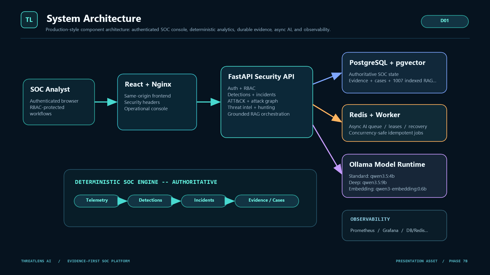
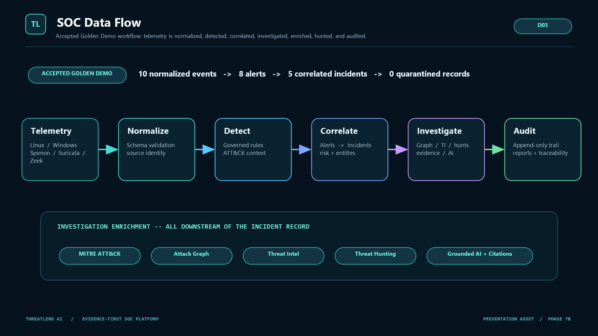
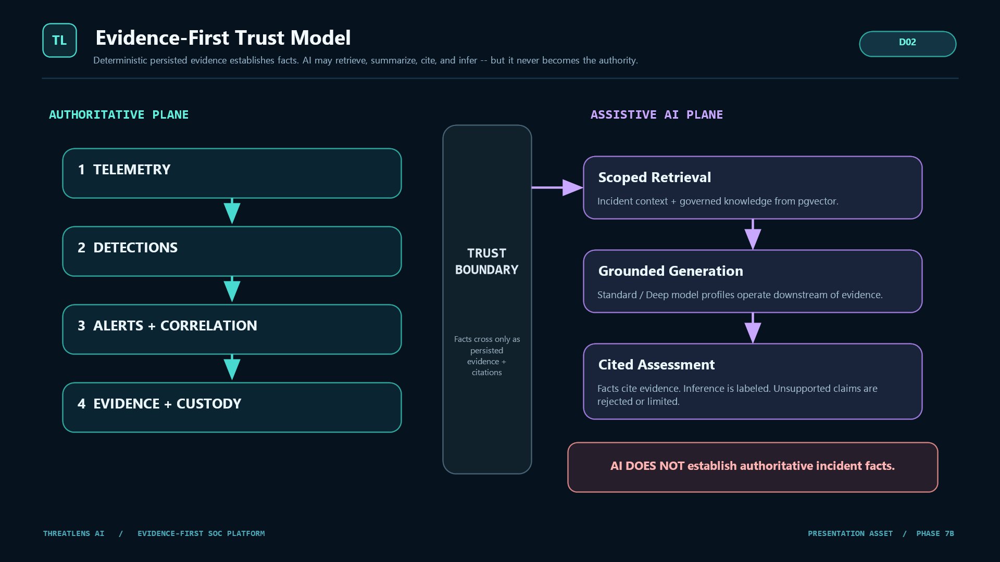
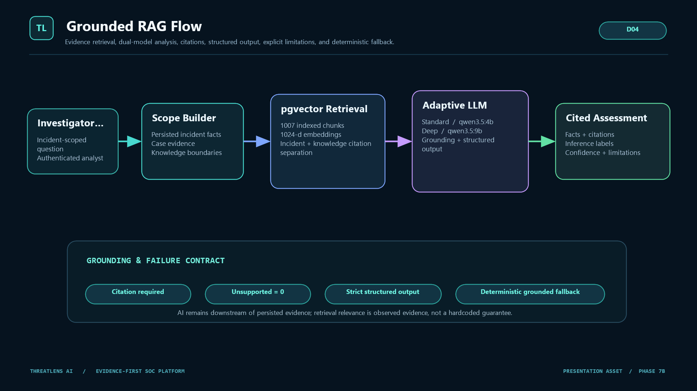
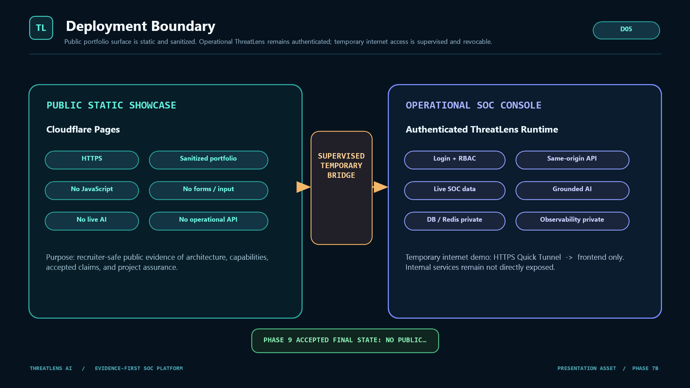

ThreatLens AI / Evidence-first SOC platform
Deterministic evidence first. AI second.
Production-style SOC investigation platform for telemetry ingestion, detections, correlated incidents, evidence-backed cases, ATT&CK context, attack graphs, threat hunting, and grounded AI analysis.
FastAPIReactPostgreSQL / pgvectorRedis workerOllama RAGCloudflare showcase
Slide 01 / recruiter opening
Problem
SOC teams do not just need another chatbot.
NoiseRaw telemetry becomes alerts, but many tools do not preserve the full investigation story.
FragmentationCases, evidence, ATT&CK mapping, hunts, graph context, and AI notes often live in different places.
Trust gapAI summaries can be useful, but unsupported claims create risk during security investigation.
Demo gapProjects often show UI screens without proving reliability, security boundaries, and deployment readiness.
Slide 02 / motivation
Solution
ThreatLens connects detections, evidence, cases, graphs, hunts, and grounded AI.
The platform is designed around a strict trust model: persisted SOC evidence is authoritative; AI operates downstream with retrieval, citations, structured output, confidence, and limitations.
10accepted golden-demo normalized events
8alerts generated by governed detection logic
5correlated incidents available for investigation
Slide 03 / product thesis
Architecture
System architecture

Authenticated React console, FastAPI security API, PostgreSQL + pgvector, Redis worker, Ollama model runtime, and observability.
Slide 04 / architecture diagram
SOC workflow
Telemetry to investigation

Golden Demo flow: 10 normalized events -> 8 alerts -> 5 correlated incidents -> evidence-backed investigation surfaces.
Slide 05 / SOC data flow
Golden Demo story
Accepted demo narrative
InputsHeterogeneous telemetry including Linux, Windows, Sysmon, Suricata, and Zeek-style signals.
DetectionsFixture-backed rule quality and governed detection evaluation.
IncidentsOpen, high-priority and critical incidents with correlated evidence.
InvestigationCase notes, custody, threat intelligence, hunts, attack graph, RAG history, and audit capability.
Slide 06 / accepted demo path
Trust model
Evidence-first trust boundary

AI does not establish authoritative incident facts. It retrieves, reasons, cites, and labels uncertainty downstream of stored evidence.
Slide 07 / evidence trust model
Grounded AI
RAG flow and model profiles

pgvector retrieval, 1007 indexed chunks, 1024-d embeddings, structured generation, citations, limitations, and deterministic fallback.
Standard: qwen3.5:4b
Deep: qwen3.5:9b
Embedding: qwen3-embedding:0.6b
Slide 08 / grounded RAG
Security and deployment boundary
Public showcase is static. Operational demo is supervised.

Cloudflare Pages hosts a sanitized static portfolio. The operational SOC console remains authenticated and was proven through temporary, revocable Quick Tunnel access.
Slide 09 / deployment boundary
Assurance
What was proven before calling it production-style?
ReliabilityRestart readiness, queue recovery, idempotency repair, and concurrency-safe job creation.
AI safetyGrounding, citation checks, unsupported-claim rejection, model readiness, and RAG continuity.
Internet boundaryHTTPS, same-origin API, unauthenticated boundary, no direct internal-service exposure, and final public exposure NONE.
Evidence chainEach phase was frozen by branch, SHA, tree, receipt, and no-mutation checks.
Slide 10 / engineering assurance
Demo walkthrough
What I would show in a recruiter/interviewer walkthrough
- Public static showcase: sanitized architecture and accepted project claims.
- Authenticated SOC console: Overview, incident queue, analysis history, and RAG status.
- One incident: evidence, custody, ATT&CK, threat intelligence, hunt, and graph context.
- AI investigation: grounded answer with citations, limitations, and no unsupported claims.
- Security boundary: public tunnel can be started, verified, and revoked safely.
Slide 11 / demo script
Close
Why this project is interview-defensible
ThreatLens AI demonstrates full-stack security engineering: backend API design, RBAC, durable SOC data modeling, async workers, idempotency, RAG architecture, local deployment, observability, public showcase hardening, and controlled internet-demo lifecycle.
BuildFastAPI, React, PostgreSQL, Redis, Docker, Ollama
SecurityRBAC, same-origin boundary, auditability, evidence custody
ProofFrozen phases, receipts, public verification, clean worktree
Slide 12 / closing pitch